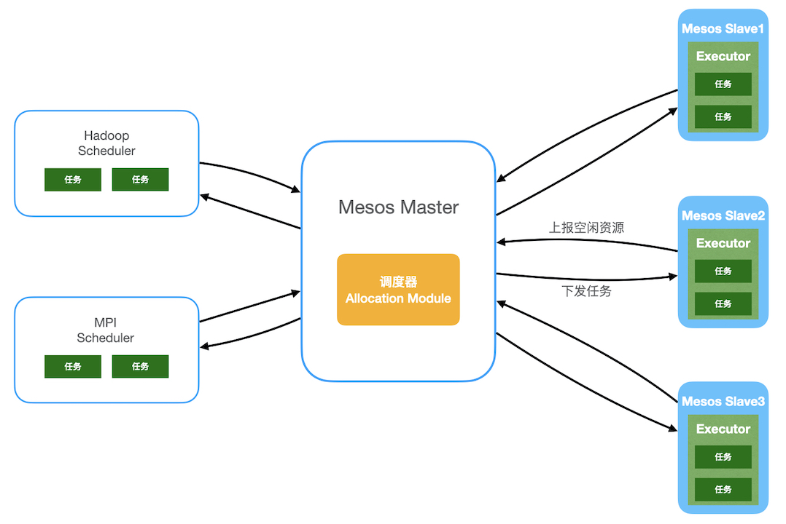

分布式调度架构
分布式系统为用户任务寻找合适的服务器资源的过程叫做调度。分布式架构中调度器是一个非常重要的部分，调度器提供多种调度策略并完成具体的调度工作。常见的调度原理有单体调度、两层调度、共享状态调度。
单体调度
集群中只有一个节点运行调度进程，该节点对集群中的其他节点具有访问权限，可以搜集其他节点的状态、资源信息等进行统一管理，同时结合用户任务对资源的需求，在调度器中把任务与资源进行匹配并根据匹配结果将任务指派给合适节点的调度方式叫做单体调度。

单体调度设计
集群管理中单体调度模称为**单体调度器（Scheduler）**或者集中式调度器，是使用中心化的方式去管理资源、调度任务。调度器在系统中以单实例存在，所有资源请求和任务调度都通过这个实例进行。单体调度器拥有全局资源视图和全局任务，可以很容易地实现对任务的约束并实施全局性的调度策略。Google Borg、Kubernetes使用的就是单体调度设计。
Borg调度设计
作业与任务
调度的目的就是为作业或者任务寻找合适的资源，那么什么是作业与任务？
- 作业：一个Borg作业包括名称、拥有者和任务个数，还有一些任务运行的约束（处理器、操作系统等）。一个作业只在一个集群中运行，一个作业可以包含多个任务，作业类似于用户在一次计算过程中要求计算机做的工作总和。
- 任务：任务是调度的基本单位，对应一组进程，运行在一台机器上或者一个容器内，任务是作业的一项项具体工作，多个任务可以在多台机器上执行。
调度算法

Scheduler 负责任务的调度，当用户提交一个作业给 BorgMaster 后，BorgMaster 会把该作业保存到 Paxos 仓库中，并将这个作业的所有任务加入等待队列中。调度器异步地扫描等待队列，将任务分配到满足作业约束且有足够资源的计算节点上。
Borg调度算法的核心思想包括两个阶段：
- 可行性检查：寻找一组可以运行任务的机器（Borglet），调度器会找一组满足任务约束并且有足够资源的机器
- 评分取优：从可行的机器中选择评分高的机器（Borglet）执行任务。调度器确定每台可行机器的适宜性，Borg 根据评分机制，对可行性检查阶段中筛选出的机器进行打分，选出最适合调度的一台机器。
评分算法
-
最差匹配：该算法的核心是将任务尽量分散到不同的机器上。该算法的问题在于，它会导致每个机器都有少量的无法使用的剩余资源，因此有时称其为“最差匹配”（worst fit）。
比如，现在有两个机器，机器 A 的空闲资源为 1 个 CPU 和 1G 内存、机器 B 的空闲资源为 0.8 个 CPU 和 1.2G 内存；同时有两个任务，Task1 的资源需求为 0.4 个 CPU 和 0.3G 内存、Task2 的资源需求为 0.3CPU 和 0.5G 内存。按照最差匹配算法思想，Task1 和 Task2 会分别分配到机器 A 和机器 B 上，导致机器 A 和机器 B 都存在一些资源碎片，可能无法再运行其他 Task。
-
最佳匹配：该算法追求把机器上的任务塞得越满越好。这样就可以“空”出一些没有用户作业的机器（它们仍运行存储服务），来直接放置大型任务。
这两个评分算法各有利弊，应用中需要根据实际情况来选择更适宜的评分算法。比如，对于资源比较紧缺，且业务流量比较规律，基本不会出现突发情况的场景，可以选择最佳匹配算法；如果资源比较丰富，且业务流量会经常出现突发情况的场景，可以选择最差匹配算法。
单体调度是针对一个集群或一个数据中心的，那么多个集群或多个数据中心如何实现单体调度？
答案是集群联邦。所谓集群联邦，就是将多个集群联合起来工作，核心思想是增加一个控制中心，由它提供统一对外接口，多个集群的 Master 向这个控制中心进行注册，控制中心会管理所有注册集群的状态和资源信息，控制中心接收到任务后会根据任务和集群信息进行调度匹配，选择到合适的集群后，将任务发送给相应的集群去执行。集群联邦的概念，其实就是单体调度的分层实现。
两层调度
单体调度的中央服务器容易出现单点瓶颈，并且限制了调度规模和支持的服务类型，针对这些问题就有了改进方案——两层调度结构。
为什们单体调度会限制支持的服务类型？
不同服务具有不同特征，对调度和计算的要求也不一样，单体调度框架会随着任务类型增加而变的复杂，比如开始只有批处理，后面又增加了流数据任务，后面又有新的任务加入，最终变得难以扩展和维护。

两层调度结构把资源和任务分开调度，一层调度器只负责资源管理和分配，另外一层调度器负责任务与资源的匹配。第一层仍是一个简化的中央调度器，第二层调度有各个应用程序框架完成，可以有多种调度器，从而能够支持不同的任务类型。中央调度器从整体上管理资源，并分配给二层调度器，二层调度器再根据具体任务将资源和任务匹配。
Mesos调度设计
Mesos是一个典型的双层调度框架，Mesos包括资源管理集群（第一层）和框架（第二层）。Mesos 本身实现的调度器Allocation Module为第一层调度，负责资源管理，然后将第二层任务调度交给了框架完成。

- 资源管理集群是由一个 Master 节点和多个 Slave 节点组成的集中式系统。每个集群有且仅有一个 Master 节点，负责管理 Slave 节点，并对接上层框架；Slave 节点向 Master 节点周期汇报资源状态信息，并执行框架提交的任务。
- 框架（Framework）运行在 Mesos 上，是负责应用管理与调度的“组件”，比如 Hadoop、Spark、MPI 和 Marathon 等，不同的框架用于完成不同的任务，比如批处理任务、实时分析任务等。框架主要由调度器（Scheduler）和执行器（Executor）组成，调度器可以从 Master 节点获取集群节点的信息 ，执行器在 Slave 节点上执行任务。
基本原理
- 框架向 Mesos Master 注册；
- Mesos Slave 节点定期或周期向 Mesos Master 上报本节点的空闲资源；
- Mesos Master 的 Scheduler 进程收集所有节点的空闲资源信息，并以 Resource Offer 的方式将空闲资源发送给注册的框架；
- 框架的 Scheduler 接收到 Mesos 发送的资源后，进行任务调度与匹配，匹配成功后，将匹配结果下发给 Mesos Master，并由 Mesos Master 转发给相应节点的执行器执行任务。
Mesos 采用 Resource Offer 机制衔接了第一层和第二层调度。通过 Resource Offer 机制，第一层调度将资源主动告知第二层调度，然后第二层调度进行具体的任务匹配，从而实现了任务调度与资源管理的分离。
**Resource Offer 机制是指Mesos Master 主动将节点空闲资源，以类似发放（Offer）的方式发给每个框架，如果框架需要则使用，不需要则还回。
Mesos Master 通过资源分配算法决定给各个 Framework 提供多少资源，而 Framework 则决定接受哪些资源，以及哪些任务使用这些资源运行。第二层框架层的调度策略根据具体实现而各有不同，例如Hadoop、Spark各自的调度策略，这里不做详细介绍。
第一层调度资源分配算法
最大最小公平算法 - 绝对公平
这是一种尽可能让更多资源需求方满意并且兼顾公平的算法，有3个主要原则：
- 按照用户对资源需求量递增的顺序进行空闲资源分配；
- 不存在用户得到的资源超过自己需求的情况；
- 对于分配的资源不满足需求的用户，所获得的资源是相等的。
分配资源时按照以上原则多次迭代，直到满足所有用户的资源需求或者资源已被全部分配完毕，迭代结束。
具体例子：
假设，现在有总量为 100 的空闲资源，有 4 个用户 A、B、C、D 对该资源的需求量分别为（35，10，25，45），分配流程如下所示：
- 按照用户对资源的需求量升序排列，则 4 个用户的需求量为（B:10，C:25，A:35，D:45）。
- 平均分配空闲资源。资源空闲总量 100，除以用户数 4，则平均空闲资源量为 25；按照第一步中需求量分配后，用户资源需求量为（0，0，10，20），且用户 B 由于资源需求量小于 25，因此会剩余资源。此时空闲资源量为 15，资源需求人数为 2。
- 重复第二步，平均分配资源，15/2=7.5，即分别为用户 A 和 D 分配 7.5 份资源，此时用户资源需求量为（0，0，2.5，12.5），空闲资源量为 0，资源需求人数为 2。
- 所有资源已分配完，算法终止。
可以看出最大最小公平算法采用了绝对公平的方式分配资源，但是有可能会导致大量的资源浪费，比如上述例子中用户A（需求量为 35） 、用户D（需求量为 45）虽然公平分配了 32.5 的空闲资源，但由于资源不满足需求，A、D用户均无法执行任务。
主导资源公平算法 - 尽可能满足更多用户
主导资源公平算法在考虑用户公平性的前提下，还考虑了用户对不同资源类型的需求，以尽可能地合理分配资源，尽可能地满足更多的用户。
针对多种资源的需求，主导资源公平算法首先计算已经分配给用户的每一种资源的占用率（Resource Share）。所有资源占用率中的最大值称作该用户的主导资源占用率，而主导资源占用率对应的资源就是用户的主导资源。
- 具体例子：

假设系统中的资源共包括 18 个 CPU 和 36 GB 内存，有两个 Framework（Framework A 和 Framework B）分别运行了两种任务，假设 Framework A 运行内存密集型任务，Framework B 运行 CPU 密集型任务，且每个任务所需要的资源量是一致的，分别是 <2 CPU, 8 GB> 和 <6 CPU, 2 GB>。
-
第一步：计算资源分配量。
假设 x 和 y 分别是 Framework A 和 Framework B 分配的任务数，那么 Framework A 消耗的资源为{2x CPU，8x GB}，Framework B 消耗的资源数为{6y CPU，2y GB}，分配给两个 Framework 的总资源量为（2x+6y）个 CPU 和（8x+2y）GB 内存。 -
第二步：确定主导资源。
对于 Framework A 来说，每个任务要消耗总 CPU 资源的 2/18，总内存资源的 8/36，所以 Framework A 的主导资源为内存；对于 Framework B 来说，每个任务要消耗总 CPU 资源的 6/18 和总内存资源的 2/36，因而 Framework B 的主导资源为 CPU。 -
第三步：DRF 算法的核心是平衡所有用户的主导资源占用率，尽可能试图最大化所有用户中最小的主导资源占用率。在满足公式的条件下，使得 x 和 y 越大越好。通过求解可以得出：x=3，y=2，每个 Framework 获取了相同比例的主导资源，即：A 获取了 2/3 的内存，B 获取了 2/3 的 CPU。
在实际任务分配过程中，主导资源率是根据已经分配给 Framework 的资源，占集群中总资源量的多少进行计算的，并且在每次分配过程中，会选择主导资源最小的 Framework 进行分配，也就是试图最大化所有用户中最小的主导资源占用率。
主导资源公平算法更多知识可参考“Dominant Resource Fairness: Fair Allocation of Multiple Resource Types”这篇论文
算法对比
- 最大最小公平算法适用于单一类型的资源分配场景，最大最小公平算法从公平的角度出发，为每个用户分配不多于需求量的资源；
- 主导资源公平算法适用于多种类型资源混合的场景，从任务出发，目的在于尽量充分利用资源使得能够执行的任务越多越好。
共享状态调度
共享状态调度沿用了单体调度器的模式，但将单体调度器分解为了多个调度器，每个调度器都有全局的资源状态信息，能够实现最优的任务调度，也提供了更好的可扩展性。
这种调度架构在支持多种任务类型的同时，还能拥有全局的资源状态信息。这种调度架构的多个调度器能共享集群的资源状态、任务状态等，我们称这种调度架构为共享状态调度器。

- State Storage：资源维护模块，负责储存并维护资源和任务的状态，以便Scheduler查询资源状态和调度任务
- Resource Pool：节点集群，接受并实行Scheduler调度的任务
- Scheduler：任务调度操作
共享状态调度的典型代表有 Google 的 Omega、微软的 Apollo，以及 Hashicorp 的 Nomad 容器调度器，下面我们介绍下Omega调度架构。
Omega调度设计
Omega 在设计时参考了 Borg 的设计，吸收了 Borg 的优点，并改进了其不足之处。

名词解释
- Cell：每个 Cell 管理着部分物理集群，一个集群有多个 Cell，可以将“Cell”理解为一个集群的子集群或子节点的集合。
- State Storage：负责存储和维护资源及任务状态，里面有一个 Cell State 文件，记录着全局共享的集群状态（主本）。
- Scheduler：调度器——资源分配决策者，每个调度器私有一份Cell State副本，调度器可以查看 Cell 的整个状态，并申请任何可用的集群资源。一旦调度器做出资源调度决策，它就会在原子提交中更新本地的 Cell State 的资源状态副本。若同时有多个调度器申请同一份资源，State Storage 模块可以根据任务的优先级，选择优先级最高的那个任务进行调度。
在 Omega 系统中，每个调度器都具有对整个集群资源的访问权限，从而允许多个调度器自由地竞争空闲资源，并在更新集群状态时使用乐观并发控制来调解资源冲突问题，这样就有效地解决了两层调度中 Framework 只拥有局部资源导致的无法实现全局最优的问题。
工作原理
Omega将集群中资源的使用和任务的调度当作数据库中的一条条事务进行管理。数据库是一个共享的状态，对应 Omega 中的 Cell State，而每个调度器都要根据数据库的信息（即集群的资源信息）去独立完成自己的任务调度策略。

在一个应用执行的过程中，调度器会将一个 Job 中的所有 Task 与 Resource 进行匹配。调度器会设置多个 Checkpoint 来检测 Resource 是否都已经被占用，只有这个 Job 的所有 Task 可以匹配到可用资源时，这个 Job 才可以被调度；如果存在 Task 匹配不到可用资源，那么这个事务需要执行回滚操作，Job 调度失败。
无论事务是否执行成功，调度器都会在事务执行之后，重新从主本那里同步更新本地 Cell State 的资源状态副本，以保证本地集群信息状态的有效性。若事务未成功执行，则调度器会在必要时重新运行其调度算法并再次尝试申请资源。
- 调度器对 Job 的调度是具有原子性的，一个 Job 的所有 Task 都是一起调度的，即使部分 Task 调度失败了，调度器再次调度时也必须再次调度整个 Job。
- 多个调度器可以并行调度，无需等待其他调度器调度结果，若存在冲突时，进行冲突处理，比如根据 Job 的优先级，优先级高则获得资源。
Omega采用了传统数据库中的乐观锁（MVCC，Multi-Version Concurrency Control，基于多版本的并发访问控制），即每一个应用都发放了所有的可用资源，在更新集群状态时使用乐观并发控制来解决资源冲突问题，来提高 Omega 的并发度。
不同的 Omega 调度器可以实现不同的策略，但有一些调度规则是所有调度器必须达成一致的，比如哪些资源是允许分配的、如何评估作业的优先级等。Omega 调度器将两层调度器中的集中式资源调度模块简化成了一些持久化的共享数据（状态）和针对这些数据的验证代码。而这里的“共享数据”，实际上就是整个集群的实时资源状态信息；而验证代码就是解决调度冲突的调度规则。
总结
集群中需要管理的对象主要包括两类：
- 资源的分配和使用状态
- 任务的调度和执行状态

单体调度中，这两种对象都是由单体调度器管理的，中央调度器拥有整个集群的节点资源信息，可以实现全局最优调度。但它的缺点是，无调度并发性，且中央服务器存在单点瓶颈问题，导致支持的调度规模和服务类型受限，同时会限制集群的调度效率。单体调度适用于小规模集群。
两层调度中，这两种对象分别由第一层中央调度器和第二层 Framework 调度器管理，第一层调度器负责集群资源管理，并将可用资源发送给第二层调度；第二层调度接收到第一层调度发送的资源，进行任务调度。由于 Framwork 调度器只能看到部分资源，因此不能保证全局状态的一致性，任务匹配算法无法实现全局最优；两层调度是悲观并发调度，在执行任务之前避免冲突。双层调度适用于中等规模集群。
共享状态调度存在多个调度器，每个调度器都拥有集群全局的资源状态信息，因此任务匹配算法可以实现全局最优性。同时该调度采用了乐观并发调度，在执行了任务匹配算法后，调度器将其调度结果提交给 State Storage，由其决定是否进行本次调度，从而解决竞争同一种资源而引起的冲突问题。但是如果没有妥善处理资源竞争的问题，则很可能会产生资源冲突，从而导致任务调度失败。这时，用户就需要对调度失败的任务进行处理，比如重新调度、任务调度状态维护等，从而进一步增加了任务调度操作的复杂度。共享状态调度适合大规模集群。
乐观并发调度和悲观并发调度
乐观并发调度，强调事后检测，在事务提交时检查是否避免了冲突：若避免，则提交；否则回滚并自动重新执行。也就是说，它是在执行任务匹配调度算法后，待计算出结果后再进行冲突检测。
悲观并发调度，强调事前预防，在事务执行时检查是否会存在冲突。不存在，则继续执行；否则等待或回滚。也就是说，在执行任务匹配调度算法前，通过给不同的 Framework 发送不同的资源，以避免冲突。